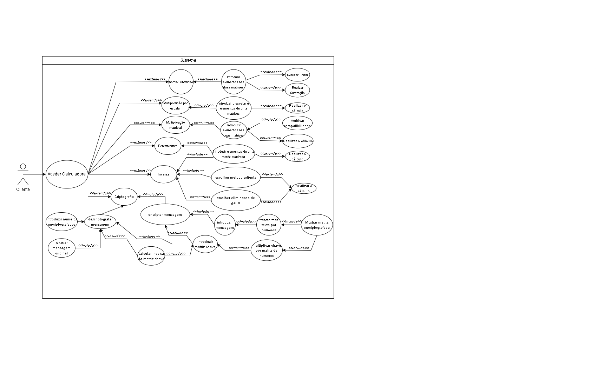
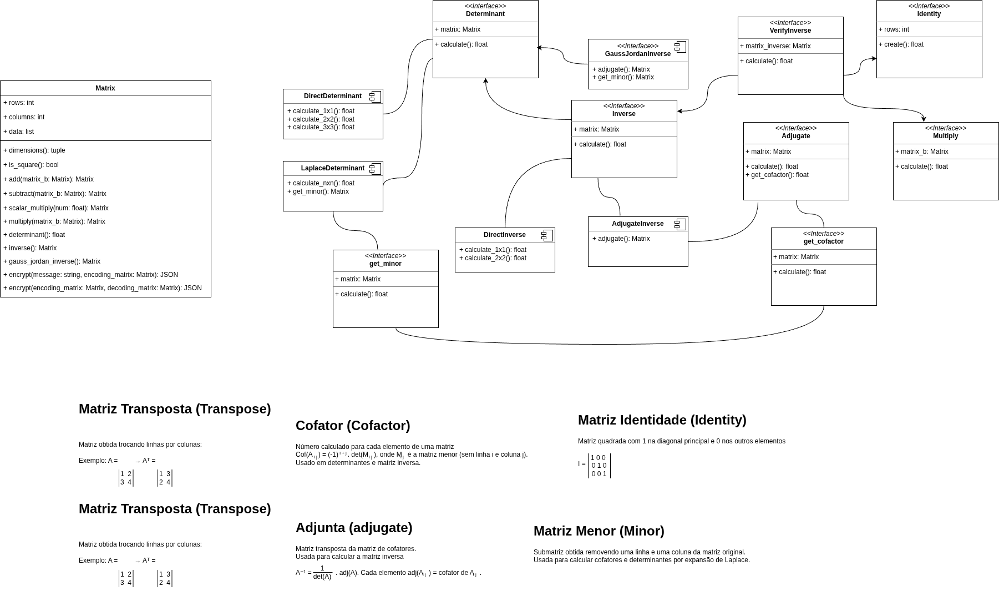

Análise de sistema
Authors: Tanjil Khan, Dmytro Bohutsky, Luís Martins, Ricardo Magalhães
Date: 01/19/2026
O sistema deve ter as seguintes funcionalidades:
O sistema deve permitir ao utilizador introduzir matrizes de dimensão variável, definindo explicitamente o número de linhas e colunas, bem como os respetivos valores reais.
O sistema deve permitir a soma de duas matrizes
O sistema deve permitir a subtração de duas matrizes
O sistema deve permitir a multiplicação de uma matriz
O sistema deve permitir a multiplicação de duas matrizes
O sistema deve calcular o determinante de uma matriz quadrada: - Matrizes de ordem superior através da expansão por cofatores - Caso a matriz não seja quadrada, o sistema deve informar o utilizador.
O sistema deve calcular a matriz inversa de uma matriz quadrada, desde que o determinante seja diferente de zero. Caso contrário, o sistema deve apresentar uma mensagem de erro adequada.
O sistema deve converter uma mensagem de texto numa matriz numérica com base numa tabela de codificação pré-definida (A=1, B=2, …, Z=26, sinais especiais).
O sistema deve permitir a criptografia de mensagens através da multiplicação da matriz da mensagem por uma matriz de codificação.
O sistema deve permitir a recuperação da mensagem original através da multiplicação da matriz criptografada pela matriz inversa de decodificação.
O sistema deve validar:
O sistema deve executar operações matriciais de pequena e média dimensão num tempo de resposta inferior a 1 segundo, garantindo fluidez na interação com o utilizador.
O sistema deve apresentar uma interface simples e intuitiva, permitindo que utilizadores com conhecimentos básicos de matemática consigam realizar operações sem dificuldade.
O sistema deve garantir resultados matematicamente corretos, respeitando rigorosamente as definições formais das operações matriciais.
O sistema não deve armazenar permanentemente mensagens introduzidas para criptografia, garantindo a confidencialidade dos dados do utilizador durante a execução.
O sistema deve lidar corretamente com erros, como: - Matrizes incompatíveis - Determinantes nulos - Introdução de dados inválidos - Apresentar mensagens claras ao utilizador.
O sistema deve ser projetado de forma a permitir, no futuro, a adição de novas operações matemáticas ou métodos de criptografia sem necessidade de reestruturação profunda.
O sistema deve respeitar boas práticas de desenvolvimento de software e normas académicas, garantindo clareza, organização e manutenção do código.

Neste diagrama, representamos a estrutura e relações da classe Matriz: 
O seguinte diagrama mostra a sequência dos processos e a estrutura do nossso projeto:
O seguinte fluxograma descreve como seria o fluxo enquanto se executa os testes: